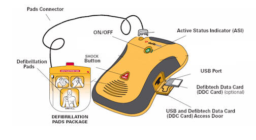

Anatomy
Components of a defibrillator include: a power source, a capacitor, an inductor, a rectifier and a trans- former. The different components allow electrical energy to be modulated and stored, and alter the timing, magnitude, and waveform of the delivered energy.
Working
A centrifuge machine works by creating a powerful centrifugal force that separates different components of a liquid mixture based on their density. The machine typically consists of a rotor, which holds the sample, and an electric motor that spins the rotor at high speeds. When the rotor spins, the centrifugal force pushes the components of the sample towards the outer edge of the rotor. Because different components of the sample have different densities, they will settle at different distances from the center of the rotor. The denser components will settle closer to the outer edge of the rotor, while the less dense components will settle closer to the center. After the rotor has reached the desired speed, the centrifuge machine will be stopped and the components of the sample can be collected and analyzed separately. This separation process is used for a variety of applications, such as isolating cells or particles from a suspension, separating proteins or nucleic acids from other biomolecules, or separating chemicals in industrial processes.
AC defibrillator vs DC defibrillator
| S.No | AC defibrillator | DC defibrillator |
|---|---|---|
| 1 | An AC defibrillator is the oldest and simplest type. The construction of AC defibrillator is such that appropriate values are available for internal and external defibrillation. In AC defibrillation, a shock of 50 Hz a.c frequency is applied to the chest for a time of 0.25 to 1 second through electrodes. The procedure of applying electric shock to resynchronize heart is known as Countershock. | DC defibrillator does not produce side effects and produces normal heartbeat. Ventricular fibrillation is avoided when high-energy shock is passed through discharging capacitor that is exposed to heart or chest of the patient. DC defibrillator consists of auto transformer T1 that acts as primary of the high voltage transformer T2. |
| 2 |  |
 |
Requirement of defibrillator
- They are used to prevent or correct an arrhythmia, an uneven heartbeat that is too slow or too fast.
- If the heart suddenly stops, defibrillators can also help it beat again.
- Different types of defibrillators work in different ways.
- A defibrillator should be used when a person is in cardiac arrest.
- CPR should be done until you can get a defibrillator. If you see someone having a cardiac arrest, call 999, start CPR and get someone to find a defibrillator.
- The emergency operator can advise you if you can't find one.